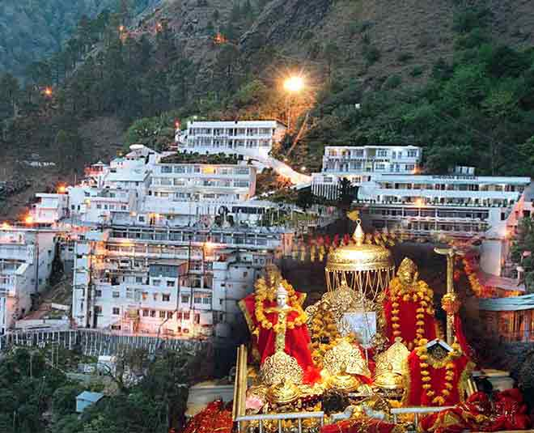

Top 3 RICHEST Temples in INDIA
India, not only has a rich diversified culture and spiritual heritage but also has a myriad of temples that not only serves as places for worship but also as significant economic entities. These temples are revered for their spiritual significance and also for their immense wealth, and thus becoming the richest temples in India among the rest.
-
Shree Padmanabhaswamy Temple, Kerala
Revenue:Rs.1,20,000 crores

Shree Padmanabhaswamy Temple, Kerala revenue:Rs.1,20,000 crores The history of the temple dates back to 500 BC and is situated at the center of Thiruvananthapuram, the capital name of Kerala. The temple is dedicated to the worship of Lord Vishnu. This temple is among the richest temples in India and has been placed at the top spot.
-
Tirumala, Venkateswara Temple (Tirupati), Andhra Pradesh
Revenue:Rs.4,385.2 crores
The temple that was constructed in the Dravidian style of architecture in the 10th century, is one of the world’s largest pilgrimage spots. The temple is dedicated to the worship of Lord Venkateshwara and is believed to be the place where he took the form of an idol and is home to the deity Govinda.
-
Vaishno Devi Temple, Jammu & Kashmir
Revenue: Rs.500 crores
The temple that has been situated inside the million year old cave. The temple is located in Jammu & Kashmir. The temple is dedicated to the worship of Goddess Vaishno Devi. The holy cave is located at the altitude of 5,200 feet. The devotees of the temple come from all over the world.